전자산업기사 (2007-05-13 기출문제)
1과목: 전자회로
1. 다음 RC 저역통과 여파기 회로의 차단 주파수는 약 몇 ㎑인가?
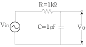
- 16
- 100
- 159
- 223
(정답률: 75%)

2. 60Hz, 3상, 전파 정류회로에서 생기는 맥동주파수는 몇 kHz인가?
- 60
- 120
- 180
- 360
(정답률: 76%)
3. 다음과 같은 정류기는 어느 점에 교류 입력을 연결하여야 하는가?
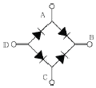
- B - C 점
- A - D 점
- A - C 점
- B - D 점
(정답률: 87%)
4. 베이스 접지(CB) 증폭회로에 대한 설명으로 적합하지 않은 것은?
- 입력임피던스가 낮다.
- 높은 주파수를 다루는 응용분야에 주로 사용된다.
- 입력에 대한 출력의 위상 반전이 없다.
- 전류이득이 1보다 훨씬 크다.
(정답률: 75%)
5. 연산증폭기에서 스루 레이트(slow rate)는 어떤 특성에 크게 영향을 주는가?
- 잡음 특성
- 이득 특성
- 스위칭 특성
- 동상 제거 특성
(정답률: 85%)
6. 이미터 접지 증폭기에서 β=100 , ICO =0.1mA, IB =0.2mA일 때 IC 는 약 몇 mA인가?
- 12.2
- 20
- 30.1
- 45.6
(정답률: 33%)
7. N형 반도체를 만들기 위하여 실리콘(Si)나 게르마늄(Ge)에 도핑하는 불순물 원자로 적합한 것은?
- Ga(갈륨)
- B(붕소)
- P(인)
- In(인듐)
(정답률: 56%)
8. 트랜지스터의 전류증폭률인 α 와 β 사이의 관계로서 옳은 것은? (단, α : 베이스 접지 전류 증폭율, β = 이미터 접지 전류 증폭률이다.)
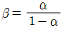
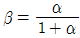
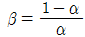
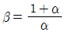
(정답률: 72%)
9. 다음 중 전계효과 트랜지스터(FET)에 관한 설명으로 틀린 것은?
- BJT 보다 이득대역폭 적(GㆍB)이 적다.
- BJT 보다 높은 입력저항을 갖는다.
- 전류제어형 소자이다.
- BJT 보다 온도변화에 따른 안정성이 높다.
(정답률: 67%)
10. 다음 FET 증폭회로의 전압증폭도는 약 얼마인가?(단, μ = 500, rd = 100kΩ 이다.)
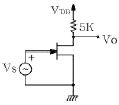
- -15
- -24
- -32
- -45
(정답률: 65%)
11. 다음 중 연산증폭기의 응용 예로 적합하지 않는 것은?
- 능동여파기
- RC발진기
- 디지털계산기
- A/D면환기
(정답률: 69%)
12. 증폭기의 동조회로가 250μH 의 인덕터와 200pF 의 커패시터로 구성되어 있을 때 동조주파수는 약 몇 kHz인가?
- 520
- 710
- 840
- 1⑤0
(정답률: 36%)
13. 다음 그림과 같은 증폭기에 관한 설명으로 틀린 것은?
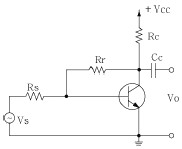
- 부궤환을 걸어줌으로써 출력 임피던스는 감소한다.
- 부궤환을 걸어줌으로써 입력 임피던스는 증가한다.
- 무궤환 때에 비해 안정도가 좋아진다.
- 부궤환을 걸어줌으로써 일그러짐은 감소한다.
(정답률: 83%)
14. 그림에서 A는 연산증폭기이다. Vi-Vo관계로 가장 적합한 것은?
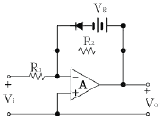
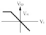
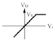
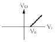
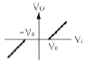
(정답률: 76%)
15. 다음 연산 회로의 출력 값으로 옳은 것은?
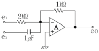
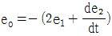
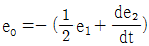
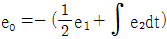
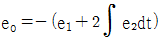
(정답률: 64%)
16. 무변조시에 AM 송신기의 공중선 전력이 10kW 이었다. 신호파로 변조하였더니 이 전력이 15kW 로 증가하였다면 변조도는 얼마인가?
- 0.45
- 0.65
- 0.7
- 1
(정답률: 30%)
17. 주기가 2π 인 그림과 같은 파형의 전압을 직류전압계로 측정하면 그 값은?
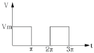
- 0
- Vm
- Vm/2
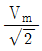
(정답률: 66%)
18. 변조를 하는 이유에 대한 설명 중 옳지 않은 것은?
- 잡음과 간섭을 줄이기 위하여
- 전파속도를 빠르게 하기 위하여
- 다중화가 가능하도록 하기 위하여
- 회로 소자의 단순화 및 시스템의 소형화를 위하여
(정답률: 68%)
19. 다음 중 정궤환을 하는 회로로 묶인 것은?
- 시미트 트리거회로, 발진회로
- 미분회로, 적분회로
- 시미트 트리거회로, 미분회로
- 발진회로, 적분회로
(정답률: 87%)
20. 저주파 전력 증폭회로의 출력측 기본파 전압이 100V이고 제2고조파 전압이 전압이 4V, 제3고조파 전압이 3V 일 때 왜율은 몇 %인가?
- 1
- 2
- 5
- 10
(정답률: 58%)
2과목: 전기자기학 및 회로이론
21. 평면도체 표면에서 d[m]의 거리에 점전하 Q[C]이 있을 때 이 전하를 무한원까지 운반하는데 요하는 일은 몇 [J]인가?
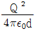
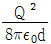
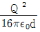
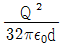
(정답률: 47%)
22. 유전체에서 변위전류를 발생하는 것은?
- 분극전하밀도의 시간적 변화
- 분극전하밀도의 공간적 변화
- 자속밀도의 시간적 변화
- 전속밀도의 시간적 변화
(정답률: 41%)
23. 극관 면적 10cm2, 간격 1mm의 평행판콘덴서에 비유전률 3의 유전체를 넣었을 때 전계의 세기가 100[kV/mm]이었다. 이 때 평행판콘덴서에 저축되는 에너지는 약 몇 [J]인가?
- 4.3 × 10-2
- 7.3 × 10-2
- 10.3 × 10-2
- 13.3 × 10-2
(정답률: 34%)
24. 전류의 세기가 I[A], 반지를 r[m]인 원형 선전류 중심에 m[Wb]인 가상 접지극을 둘 때 원형 선전류가 받는 힘은 몇 [N]인가?
- mI/2r
- mI/2πr
- mI2/2πr
- mI/2r2
(정답률: 43%)
25. 정전차폐와 자기차폐를 비교하였을 때 옳은 것은?
- 정전차폐가 자기차폐에 비교하여 완전하다.
- 정전차폐가 자기차폐에 비교하여 불완전하다.
- 두 차폐방법은 모두 완전하다.
- 두 차폐방법은 모두 불완전하다.
(정답률: 70%)
26. 전류에 의한 자계의 방향을 결정하는 법칙은?
- 렌즈의 법칙
- 플레밍의 오른손법칙
- 플레밍의 왼손법칙
- 앙페르의 오른나사법칙
(정답률: 68%)
27. 페러데이(Faraday)관의 성질 중 옳지 않은 것은?
- Faraday관내의 전속수는 대전 도체 표면 전하밀도에 따라 달라진다.
- Faraday관 양단에 정, 부의 단위 전하가 있다.
- 진전하가 없는 점에서는 Faraday관은 연속적이다.
- Faraday관의 밀도는 전속 밀도와 같다.
(정답률: 24%)
28. 길이 ℓ[m], 한 변이 a[m]인 정방형 단면을 가진 자성체가 길이방향으로 균일하게 자화되어 자화의 세기가 Pm[T]일 때 자성체 양단의 전자극의 세기는 몇 [Wb]인가?
- a2Pm
- Pm/a2
- Pm
- πa2Pm
(정답률: 47%)
29. 그림에서 원형 루프 도선상에 전류 I가 흐를 때 P 점에서의 미소 길이 에 작용하는 힘은?
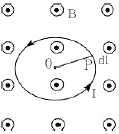
 를 따라 외향 법선방향으로 작용한다.
를 따라 외향 법선방향으로 작용한다. 를 따라 내향 법선방향으로 작용한다.
를 따라 내향 법선방향으로 작용한다.- F자계의 방향으로 향한다.
- P점에서의 루프 도선의 접선방향으로 향한다.
(정답률: 53%)
30. 다음 중 맥스웰의 전자 방정식으로 옳지 않은 것은?
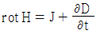
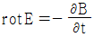
- div D = ρ
- div B = ø
(정답률: 66%)
31. 그림과 같은 회로망 가지에서 I4의 값은?
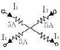
- 3A
- 5A
- 7A
- 10A
(정답률: 63%)
32. 어떤 회로에서 유효 전력이 300W이고, 무효 전력이 400Var이다. 이 회로에 100V의 전압원을 접속하면 회로에 흐르는 전류는 몇 A인가?
- 7
- 6
- 5
- 4
(정답률: 61%)
33. 단위 임펄스 δ(t)의 라플라스 변환은?
- 1
- S
- 1/S
- 0
(정답률: 77%)
34. R-L 직렬회로에서 직류 전압 E[V]를 가하기 위하여 스위치 S를 닫고 L/R[sec] 후의 전류는 몇 [A]인가?
- E/R
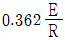
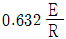
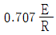
(정답률: 80%)
35. 진폭이
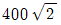
[V]이고, 주기가 0.01[초]인 정형파 교류의 주파수는 몇 [Hz]인가?- 100
- 200
- 400
- 200π
(정답률: 56%)
36. 정 K형 여파기에서 공칭 임피던스 K와 2개의 임피던스 Z1, Z2 간에는 어떤 관계가 성립하는가?
- Z2/Z1 = K2
- Z1/Z2 = K
- Z1Z2 = K2
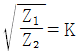
(정답률: 86%)
37. 그림과 같은 이상 변압기(Ideal transtormer) M의 값은 몇 [H]인가? (단, L1 = 2[H], L2 = 8[H]이다.)
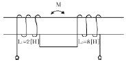
- 2
- 4
- 8
- 16
(정답률: 87%)
38. 전압이득 30을 데시벨[dB]로 표시하면 얼마인가? (단 log103 = 0.477)
- 25.45
- 29.54
- 30.12
- 35.33
(정답률: 71%)
39.
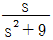
를 Lapalce 변환을 하면?- sin 9t
- sin 3t
- cos 3t
- cos 9t
(정답률: 57%)
40. 그림과 같은 회로에서 I1 과 I2 의 위상차는? (단, R1 = R2 = X1 = X2 = 1[Ω]이다.)
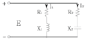
- 0°
- 45°
- 90°
- 1⑤°
(정답률: 65%)
3과목: 전자계산기일반
41. 중앙처리장치의 주 구성 요소가 아닌 것은?
- 레지스터
- 연산장치
- 제어장치
- 보조기억장치
(정답률: 72%)
42.
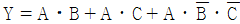
를 간단히 하면?- A
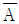
- C
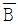
(정답률: 69%)
43. 다음 메모리 소자 중 휘발성 메모리 소자는?
- RAM
- ROM
- Bubole Memory
- PLA
(정답률: 73%)
44. 스택(stack)에 대한 설명으로 옳지 않은 것은?
- 주기억장치의 일부를 스택 영역으로 할당하여 사용한다.
- 스택은 서브루틴이나 인터럽트 서비스 루틴 사용시 복귀 주소가 지정된다.
- 스택은 선입선출(first-in, first-out)구조로 되어있다.
- 현재의 스택 위치는 CPU내의 스택포인터에 의해 지시된다.
(정답률: 70%)
45. 컴퓨터 시스템은 보통 0-주소, 1-주소, 2-주소, 3-주소 명령어를 사용하고 있다. 이 때 구분의 기준이 되는 것은?
- Register의 수
- Operation의 수
- 기억장치의 크기
- Operand 부분인 주소 부분
(정답률: 64%)
46. 8비트로 부호와 절대값 표현 방법에 의해 25와 -25를 표현한 것은?
- 25 : 00011001, -25 : 10011001
- 25 : 11001100, -25 : 10011001
- 25 : 01100110, -25 : 11100110
- 25 : 01100110, -25 : 10011011
(정답률: 52%)
47. 다음 중 컴퓨터의 출력 장치에 해당하는 것은?
- 키보드(Keyboard)
- 광학식마크판독기(OMR)
- X-Y 플로터(X-Y Plotter)
- 자기잉크문자판독기(MICR)
(정답률: 86%)
48. 사용자의 필요에 따라서 자외선이나 특정한 전압 또는 전류로서 기억된 내용을 지우고 다시 기록할 수 있는 기억 소자는?
- RAM
- ROM
- PROM
- EPROM
(정답률: 58%)
49. 산화철 분말이 포함된 특수한 잉크로 쓰여진 숫자와 기호 등을 마그네틱헤드(magnetic head)로 감지하여 직접 읽어 들이는 장치로 주로 은행 업무에 많이 사용되는 것은?
- MICR
- OMR
- OCR
- COM
(정답률: 56%)
50. C 언어에서 포인터(pointer)란?
- 메모리 주소를 저장하는 변수이다.
- 번지 값을 저장할 수 있는 상수를 뜻한다.
- 문자열 상수를 뜻한다.
- 메모리 구조를 뜻한다.
(정답률: 81%)
51. 16 bit 인스트럭션(instruction)으로 구성되어 있는 명령형식에서 OP-code가 6 bit 이면 수행할 수 있는 명령어의 최대 숫자는?
- 16
- 32
- 64
- 128
(정답률: 66%)
52. 기억장치의 접근속도가 0.5㎲이고, 데이터 워드가 32비트 일 때 대역폭은?
- 8M[bit/sec]
- 16M[bit/sec]
- 32M[bit/sec]
- 64M[bit/sec]
(정답률: 63%)
53. 다음 연산의 종류를 단향(unary)연산과 이항(binary)연산으로 구별할 때 단항 연산을 하는 연산자가 아닌 것은?
- Complement
- Move
- AND
- Shift
(정답률: 80%)
54. 다음 FORTRAN 프로그램의 연산 결과는?
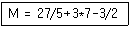
- 24
- 25
- 26
- 27
(정답률: 59%)
55. 디코더(decoder)에 대한 설명으로 옳지 않은 것은?
- 출력 중 단지 한 개만이 논리적으로 1 이 되고 나머지 출력은 모두 0 이 되는 회로이다.
- n개의 입력변수가 있을 때 최대 2n개의 출력을 가진다.
- n×m 디코더란 입력이 n개이고 출력이 m개임을 의미한다.
- 인코더(incoder)가 항상 같이 사용된다.
(정답률: 52%)
56. 다음 중 객체지향언어로 볼 수 없는 것은?
- JAVA
- C#
- C
- SmallTalk
(정답률: 77%)
57. 3-초과 코드(Excess-3 code)에서 10진수 1에 해당하는 것은?
- 0011
- 0100
- 0101
- 0110
(정답률: 71%)
58. 인터럽트를 거는 장치가 자신의 인터럽트 벡터를 데이터버스에 실어 보냄으로써 CPU가 장치를 알아낼 수 있도록 하는 방식을 무엇이라고 하는가?
- Polling
- Daisy Chain
- Polled Interrupt
- Vectored Interrupt
(정답률: 83%)
59. 다음 중 인터럽트가 발생될 수 있는 요인이 아닌 것은?
- 정전 또는 자료 전달 과정에서의 오류 발생
- 불법적인 인스트럭션의 수행
- 오퍼레이터에 의한 오동작
- 시스템 도입에 의한 유지보수
(정답률: 79%)
60. 주기억장치와 CPU의 속도 차를 극복하기 위하여 사용되는 기억장치는?
- Cache 기억장치
- Virtual 기억장치
- Segment 기억장치
- Memory 인터리빙
(정답률: 83%)
4과목: 전자계측
61. 소인발진기(sweep oscillator)의 용도가 아닌 것은?
- 광대역 증폭기의 조정
- 주파수 변별기의 측정 및 조정
- 수신기의 중간주파 증폭기의 특성 측정 및 조정
- 순시 주파수 편이 제어 회로(IDC) 측정 및 조정
(정답률: 74%)
62. 다음 중 맥스웰 브리지(Maxwell bridge)로 측정할 수 있는 것은?
- 코일의 인덕턴스
- 정전 용량
- 역률
- 유전체의 손실각
(정답률: 74%)
63. 정류형 계기의 눈금은 어떠한 값을 나타내는가?
- 실효값
- 최대값
- 평균값
- 파고값
(정답률: 71%)
64. 지시 계기에서 제어 장치에 해당하는 것은?
- 스프링 제어
- 와류 제어
- 액체 제어
- 공기 제어
(정답률: 68%)
65. 증폭기의 왜율 측정에 해당하지 않는 것은?
- 감쇄기 법
- 공진 Bridge 법
- 필터 법
- 왜율계
(정답률: 83%)
66. 계수형 카운터(counter)로서 초 저주파 측정시 가장 정밀하게 측정할 수 있는 방법은?
- 직접 주파수 측정법
- 시간에 따른 주기 측정법
- 전압에 의한 주파수 측정법
- 회전수에 따른 주파수 측정법
(정답률: 77%)
67. 디지털 볼트 미터(DVM)의 분류 방식 중 옳지 않은 것은?
- 부호판 변환방식
- 추중 비교방식
- 2중 적분방식
- 자동 평형방식
(정답률: 84%)
68. 다음 브리지의 평형 조건은?
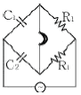
- C2/C1 = R1/R2
- C2/C1 = R2/R1
- C1C2 = R1R2
- 1/C1C2 = R1R2
(정답률: 45%)
69. 다음 중 진동편형 주파수계의 특징으로 옳지 않은 것은?
- 지시의 신뢰성이 높다.
- 보통 1000㎐ 이상에서 사용된다.
- 지시가 단계적이고, 연속성이 없다.
- 구조가 간단하고, 전압의 파형에 영향이 없다.
(정답률: 74%)
70. 방송 녹음 시 음성 전류의 크기를 측정하는 일종의 정류형 전압계는?
- VU meter
- Watt meter
- Pulse 시험기
- VTVM
(정답률: 59%)
71. 열전대형 계기에서 도선의 인덕턴스와 표유용량에 의해 발생되는 오차는?
- 공진오차
- 배분오차
- 전위오차
- 표피효과오차
(정답률: 74%)
72. 전류계 내부 저항이 RA [Ω]이고, 배율이 M일 때 분류기 저항의 크기 RS 는 몇 [Ω]인가?
- RS = RA(M-1)
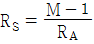
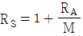
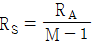
(정답률: 43%)
73. 다음 중 동조형 주파수계에 속하지 않는 것은?
- 헤테로다인 주파수계
- 공동형 파장계
- 동축공진형 주파수계
- 흡수형 주파수계
(정답률: 63%)
74. 오실로스코프의 동기 방법이 아닌 것은?
- 전원 동기
- 내부 동기
- 외부 동기
- 진폭 동기
(정답률: 79%)
75. 전압의 참값이 100V 이고, 측정값이 100.2V 이었다면 이 전압계의 오차 백분율은?
- 0.1%
- 0.2%
- 0.3%
- 0.4%
(정답률: 89%)
76. 오실로스코프(oscilloscope)의 스크린(screen) 상에 그림과 같은 도형이 나타났을 때 Y1/Y2 = 0.5 라고 하면 위상차 θ는 몇 도 인가?
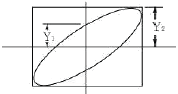
- 90°
- 60°
- 45°
- 30°
(정답률: 76%)
77. 다음 중 스트로보스코프(stroboscope)로 측정할 수 있는 것은?
- 전류
- 조도
- 전압
- 회전수
(정답률: 79%)
78. 다음 중 직류미소전력 측정에 가장 적합한 방식은?
- 3전압계법
- 전위차계법
- 직류 전력계법
- 전류력계형 전력계법
(정답률: 47%)
79. 스펙트럼 분석기의 특징이 아닌 것은?
- 주파수 대역폭이 넓다.
- CRT로 적시할 수 있다.
- 다이나믹(dynamic) 레인지가 좋다.
- 고정도(high precision) 측정이 가능하다.
(정답률: 76%)
80. 0 meter로 측정할 수 없는 것은?
- 공진 주파수
- 콘덴서의 정전용량
- Coil의 분포용량
- Coil의 실효저항
(정답률: 67%)
차단 주파수 = 1 / (2πRC)
여기서 R은 저항값, C는 커패시턴스(용량)입니다.
주어진 회로에서 R은 10kΩ, C는 1μF입니다.
따라서 차단 주파수는 1 / (2π x 10kΩ x 1μF) = 약 159.15Hz 입니다.
따라서 정답은 "159"입니다.